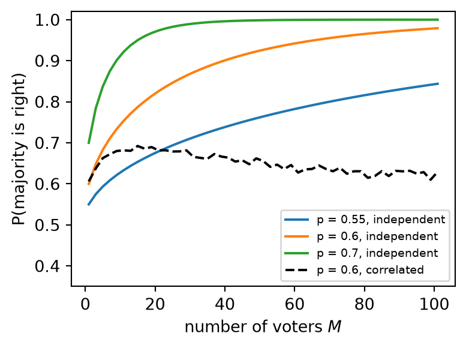
Ensemble learning
Introduction to Artificial Intelligence and Machine Learning 4
Jiabao Xu
Jiabao.Xu@glasgow.ac.uk
Massimo Vassalli
massimo.vassalli@glasgow.ac.uk
Why combine models?
6a ended on the weakness of a single tree: refitted on bootstrap samples of the same data, the trees changed their root, their size and one prediction in twelve. And 5a gave the remedy in a formula: averaging \(M\) estimates with variance \(\sigma^2\) and correlation \(\rho\) gives
\[ \mathrm{Var}\big[\bar f\big] = \sigma^2\Big(\rho + \frac{1-\rho}{M}\Big) \]
Today, the methods built on that formula, and one that goes further:
- why combining models works: the majority vote of many classifiers
- combining different models: voting and stacking
- combining many trees trained on resampled data: bagging, random forests, extra-trees, and the out-of-bag estimate
- combining weak models in sequence: boosting (AdaBoost, gradient boosting, histogram boosting)
- a comparison: when do ensembles help, and when does a linear model remain the better choice?
Note
Ensembles of trees are among the strongest methods for tabular data and the core of CW2. As in 6a, imports and data loading (breast cancer, diabetes, and a new dataset introduced later) are in a hidden cell.
The wisdom of crowds
Condorcet’s jury theorem (1785): \(M\) voters (odd), each right with probability \(p > 0.5\), independently. The majority is right when more than half of them are, a binomial probability: \[ P(\text{majority right}) = \sum_{k > M/2} \binom{M}{k} p^k (1-p)^{M-k} \] which tends to 1 as \(M\) grows. The dashed curve: voters who, with probability 0.3, all copy one shared vote (a simulation).
Independent voters at \(p = 0.6\): one is right 60% of the time, a majority of 101 almost 98%. When voters share part of their opinion, the gain stops at a plateau: the \(\rho\) of the formula. An ensemble needs members that are better than chance and diverse. Every method today is a recipe for diversity.
Combining different models
The simplest ensemble: train a few different models on the same data and combine their predictions.
- hard voting: each model votes for a class; the majority wins
- soft voting: average the predicted probabilities, \(\bar p_k(\mathbf{x}) = \frac{1}{M}\sum_{m=1}^{M}\hat p_{mk}(\mathbf{x})\), then take the most probable class. It uses the confidence of each model and is usually better, if the probabilities are reasonable (4a)
cv = StratifiedKFold(5, shuffle=True, random_state=0) # how to split: 5 stratified folds
members = [("logistic", make_pipeline(StandardScaler(), LogisticRegression())),
("lda", make_pipeline(StandardScaler(), LinearDiscriminantAnalysis())), # 5b
("tree", DecisionTreeClassifier(min_samples_leaf=10, random_state=0))] # 6a
for name, m in members + [("hard vote", VotingClassifier(members, voting="hard")),
("soft vote", VotingClassifier(members, voting="soft"))]:
print(f"{name:9s}: CV accuracy {cross_val_score(m, X_train, y_train, cv=cv).mean():.3f}")logistic : CV accuracy 0.977
lda : CV accuracy 0.953
tree : CV accuracy 0.892
hard vote: CV accuracy 0.972
soft vote: CV accuracy 0.972The vote is better than two of its members and worse than the best one. Voting helps when the members are comparably good and make different errors. Here logistic regression is clearly the best, and the vote dilutes it with two weaker opinions. Equal votes are a strong assumption.
Stacking
Stacking (Wolpert, 1992) learns how much to trust each member: a second model, the meta-learner, takes the predictions of the members as its features.
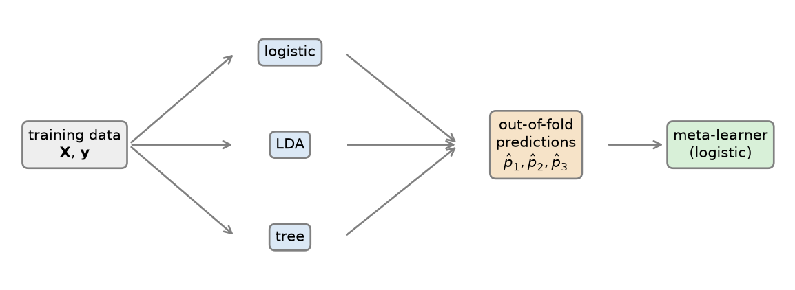
The crucial detail: the meta-learner is trained on out-of-fold predictions. Each member is fitted with cross-validation (4b) and predicts only the samples of the fold it did not see. On its own training samples, a flexible member is over-confident (a fully grown tree is always right there), and the meta-learner would learn to trust it blindly: a form of the leakage of 3b. After that, the members are refitted on all the training data.
Stacking in scikit-learn
cv = StratifiedKFold(5, shuffle=True, random_state=0) # how to split: 5 stratified folds
stack = StackingClassifier(members, final_estimator=LogisticRegression(), cv=5)
print(f"stacking: CV accuracy {cross_val_score(stack, X_train, y_train, cv=cv).mean():.3f}")
stack.fit(X_train, y_train)
print("weights of the meta-learner (logistic, lda, tree):", stack.final_estimator_.coef_.round(2))stacking: CV accuracy 0.977
weights of the meta-learner (logistic, lda, tree): [[3.93 2.59 1.84]]The meta-learner gives the largest weight to logistic regression and the smallest to the tree, and the stack matches the best member (0.977) instead of diluting it. On this dataset nothing beats the linear model: stacking can only combine the information its members have. Its strength shows when members of different families each capture part of the structure. In CW2, a stack of your two or three tools is a legitimate “best pipeline”, if it is evaluated like any other model (the stack inside the CV loop, as here).
Bagging
Bagging (bootstrap aggregating, Breiman, 1996) creates diversity from a single model type by changing the data:
- draw \(M\) bootstrap samples of the training set (4a): \(n\) samples drawn with replacement, each containing about 63% of the distinct original samples
- fit one model \(\hat f_m\) on each, typically a deep, unpruned tree (low bias, high variance: 6a)
- aggregate: average for regression; vote or average the probabilities for classification
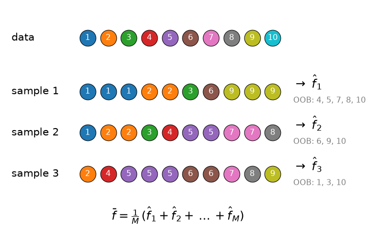
Ten samples and three bootstrap samples: some samples appear two or three times, others not at all (grey: out of bag, used later). The bias of the average is that of one tree; the variance falls as in the 5a formula, as long as the trees are not too correlated. The bootstrap samples overlap, so they are: \(\rho > 0\), and averaging alone cannot remove all the variance (the simulation of 5a: a floor at about \(\rho\sigma^2\)).
Bagging smooths the staircase
Twenty regression trees on bootstrap samples of the diabetes data (bmi only), and their average:
bmi = Xd_train[:, [2]]
xg = np.linspace(bmi.min(), bmi.max(), 500).reshape(-1, 1)
rng = np.random.default_rng(0)
fig, ax = plt.subplots(figsize=(4.5, 3.2))
ax.scatter(bmi, yd_train, s=4, color="silver")
preds = []
for m in range(20):
i = rng.integers(0, len(yd_train), len(yd_train)) # bootstrap sample
tm = DecisionTreeRegressor(min_samples_leaf=10, random_state=0).fit(bmi[i], yd_train[i])
preds.append(tm.predict(xg))
ax.plot(xg, preds[-1], "C0", alpha=0.25, linewidth=0.7)
ax.plot(xg, np.mean(preds, axis=0), "C1", linewidth=2, label="average of 20 trees")
ax.set_xlabel("bmi (scaled)")
_ = ax.legend(fontsize=8)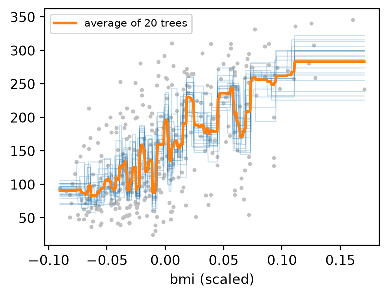
Each tree is a staircase with its steps in different places. The average keeps what they agree on and cancels where they disagree: a curve with many small steps, much smoother than any single tree, from models that can only make steps.
How many trees?
cv = StratifiedKFold(5, shuffle=True, random_state=0) # how to split: 5 stratified folds
Mv = [1, 5, 10, 25, 50, 100]
acc = [cross_val_score(BaggingClassifier(DecisionTreeClassifier(), n_estimators=M, random_state=0),
X_train, y_train, cv=cv).mean() for M in Mv]
fig, ax = plt.subplots(figsize=(4.5, 3))
ax.semilogx(Mv, acc, "o-")
ax.axhline(cross_val_score(DecisionTreeClassifier(random_state=0), X_train, y_train, cv=cv).mean(),
color="k", linestyle=":", label="one fully grown tree")
ax.set_xlabel("number of trees $M$")
ax.set_ylabel("CV accuracy")
_ = ax.legend(fontsize=8)
print("CV accuracy:", np.round(acc, 3))CV accuracy: [0.913 0.937 0.946 0.946 0.946 0.946]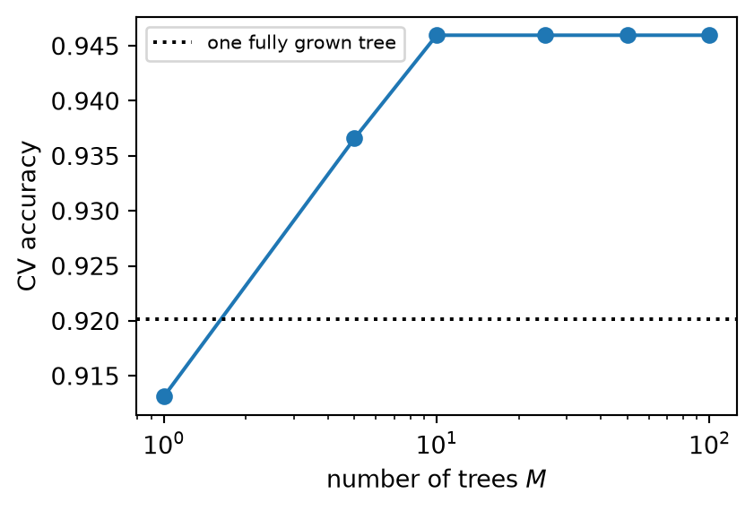
Breast cancer: from 0.920 for one tree to about 0.946 with 10 or more. The curve flattens fast: the \((1-\rho)/M\) term becomes small, and what is left is \(\rho\sigma^2\). Adding trees never makes a bagged ensemble overfit; it only costs time. \(M\) is not really a hyperparameter to tune: take it large enough for the curve to be flat.
Stable and unstable models
cv = StratifiedKFold(5, shuffle=True, random_state=0) # how to split: 5 stratified folds
logit = make_pipeline(StandardScaler(), LogisticRegression())
tree = DecisionTreeClassifier(random_state=0)
for name, m in [("logistic ", logit),
("bagged logistic ", BaggingClassifier(logit, n_estimators=100, random_state=0)),
("tree ", tree),
("bagged tree ", BaggingClassifier(tree, n_estimators=100, random_state=0))]:
print(f"{name}: CV accuracy {cross_val_score(m, X_train, y_train, cv=cv).mean():.3f}")logistic : CV accuracy 0.977
bagged logistic : CV accuracy 0.977
tree : CV accuracy 0.920
bagged tree : CV accuracy 0.946Bagging the logistic regression changes nothing: refitted on bootstrap samples, it gives almost the same model every time (it is stable), so there is nothing to average away. Bagging helps unstable models, whose variance is large: fully grown trees above all. Breiman’s rule: bagging can turn a good but unstable model into a better one; it cannot improve a stable one, and it cannot remove bias (the averaged trees are as biased as one tree).
Variations on bagging
Diversity can also come from the features. BaggingClassifier covers the whole family:
| Method | Samples for each model | Features for each model | BaggingClassifier arguments |
|---|---|---|---|
| bagging | bootstrap (with replacement) | all | bootstrap=True (default) |
| pasting | random subset, without replacement | all | bootstrap=False, max_samples=0.5 |
| random subspaces | all | random subset | bootstrap=False, max_samples=1.0, max_features=0.5 |
| random patches | random subset | random subset | max_samples=0.5, max_features=0.5 |
Pasting (Breiman, 1999) suits large datasets, where a fraction of the samples is enough for each model. Random subspaces (Ho, 1998) suit many features: each model sees only some of them. Any base model can be used (estimator=), but trees remain the natural choice: they are unstable, fast and need no scaling.
The out-of-bag estimate
Each bootstrap sample leaves out about 37% of the training samples (4a). So every sample is out of bag (OOB) for about a third of the trees, which never saw it.
Predict each sample using only those trees and compare with its label: over all samples, this is a validation estimate obtained during training, with no separate split. It is the bootstrap estimate E0 of 4b, built into the ensemble: validation for free.
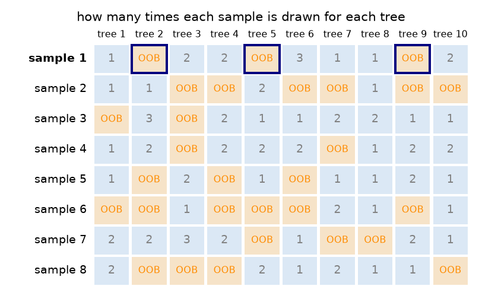
Sample 1 is out of bag for three of these ten trees (framed): its OOB prediction uses only those three. On breast cancer, with 200 trees: bagging OOB accuracy 0.941 against 0.941 with five-fold CV, random forest 0.958 against 0.953, at the cost of one fit instead of five. Handy for quick checks and large datasets; for comparing different methods, use the same CV folds for all (4b): only bagged models have an OOB estimate.
Random forests
Bagged trees are still correlated: they all see the same strong features, so they all start with similar splits (in 6a, four of six bootstrap trees had the same root). Random forests (Breiman, 2001) add a second source of randomness:
- as in bagging, each tree is grown on a bootstrap sample, deep and unpruned
- at each split, only a random subset of
max_featuresfeatures is searched for the best threshold; a new subset is drawn at every node
A strong feature is now unavailable at many nodes, so other features get their chance and the trees become more different: \(\rho\) falls. Each tree is a little worse (higher \(\sigma^2\), slightly more bias), but the average gains more than it loses. Defaults in scikit-learn: max_features="sqrt" (\(\sqrt{d}\) features per split) for classification; for regression the default is 1.0, all the features, which is plain bagging: set it explicitly (a third of the features is the classical choice).
Different roots, different trees
Why does a random choice of features help? Count which feature each tree asks about first (its root), for 100 bagged trees and 100 trees of a forest on breast cancer:
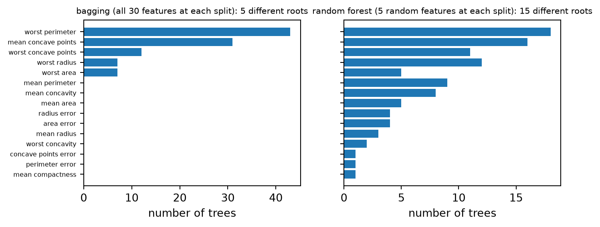
The bagged trees almost always start with the same two or three questions (the strongest features win at every bootstrap sample), so they tend to be similar trees that make similar errors: their correlation \(\rho\) is high, and the floor \(\rho\sigma^2\) of the 5a formula stays high. In the forest the strongest feature is often unavailable, the roots spread over many features, and the trees become genuinely different. Each tree is a little worse, but their errors cancel better when averaged.
How many features per split?
cv = StratifiedKFold(5, shuffle=True, random_state=0) # how to split: 5 stratified folds
mfs = [1, 2, 3, 5, 10, 20, 30]
acc = [cross_val_score(RandomForestClassifier(100, max_features=k, random_state=0),
X_train, y_train, cv=cv).mean() for k in mfs]
fig, ax = plt.subplots(figsize=(4.5, 3))
ax.plot(mfs, acc, "o-")
ax.axvline(np.sqrt(30), color="k", linestyle=":", label=r"default $\sqrt{d}$")
ax.set_xlabel("max_features")
ax.set_ylabel("CV accuracy")
_ = ax.legend(fontsize=8)
print("CV accuracy:", np.round(acc, 3))CV accuracy: [0.96 0.962 0.958 0.946 0.946 0.944 0.946]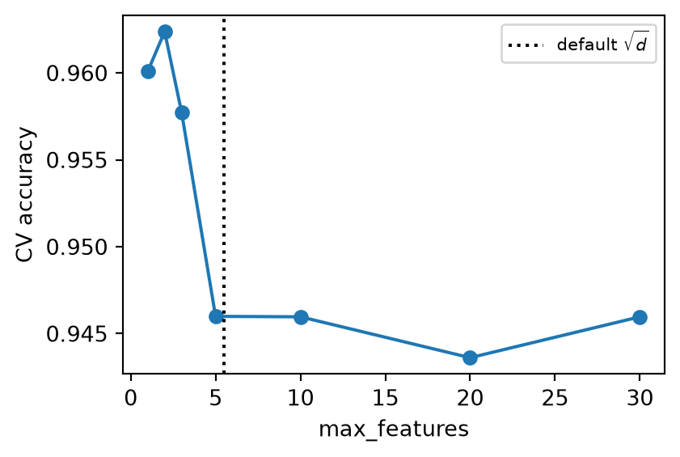
Breast cancer, 100 trees: with all 30 features (bagging) about 0.946; with a handful per split, about 0.96. The best value depends on the data: few features when many are informative and correlated (as here: radius, perimeter and area are near-copies), more when only a few matter (with 1 feature per split, an irrelevant one is often the only choice). It is the forest’s main hyperparameter.
Extremely randomised trees
Extra-trees (Geurts, Ernst and Wehenkel, 2006) go one step further: at each node, each candidate feature gets a threshold drawn at random between its minimum and maximum, and the best of these random splits is kept; no bootstrap by default. Each tree is worse, the trees are less correlated, training is faster, and the averaged boundary is smoother.
cv = StratifiedKFold(5, shuffle=True, random_state=0) # how to split: 5 stratified folds
for name, m in [("bagging ", BaggingClassifier(DecisionTreeClassifier(), n_estimators=200, random_state=0)),
("random forest", RandomForestClassifier(200, random_state=0)),
("extra-trees ", ExtraTreesClassifier(200, random_state=0))]:
r = cross_validate(m, X_train, y_train, cv=cv)
print(f"{name}: CV accuracy {r['test_score'].mean():.3f} +/- {r['test_score'].std():.3f}")bagging : CV accuracy 0.941 +/- 0.031
random forest: CV accuracy 0.953 +/- 0.017
extra-trees : CV accuracy 0.967 +/- 0.014More randomness, better accuracy, in this case: each step away from bagging lowers \(\rho\) (and extra-trees are the fastest of the three to train). The differences are of the order of one standard deviation, so on another dataset the order may change; all three are worth trying.
Forest hyperparameters
| Hyperparameter | Role | Practice |
|---|---|---|
n_estimators |
number of trees \(M\) | large enough for the OOB or CV score to be flat (100–500); more never hurts the score |
max_features |
features searched at each split | the main knob: try \(\sqrt{d}\), \(d/3\), a few values around them |
min_samples_leaf, max_depth |
size of each tree | deep trees are the default; larger leaves help with noisy targets and smooth the probabilities |
max_samples |
size of each bootstrap sample | smaller samples: more diversity, faster |
class_weight |
reweights the classes (4a) | "balanced" or "balanced_subsample" for imbalanced data |
oob_score, n_jobs |
OOB estimate; parallel training | n_jobs=-1 uses all cores: the trees are independent |
Random forests work well with their defaults, which makes them a strong first model and a hard baseline to beat in CW2. They need no scaling, accept missing values (6a) and give importances and the OOB estimate for free.
Importances in a forest
rf = RandomForestClassifier(200, random_state=0).fit(X_train, y_train)
pi = permutation_importance(rf, X_test, y_test, n_repeats=10, random_state=0)
top = np.argsort(rf.feature_importances_)[::-1][:8]
fig, axs = plt.subplots(1, 2, figsize=(5.5, 3), sharey=True)
axs[0].barh(range(8)[::-1], rf.feature_importances_[top])
axs[0].set_title("MDI (training)", fontsize=9)
axs[1].barh(range(8)[::-1], pi.importances_mean[top], xerr=pi.importances_std[top])
axs[1].set_title("permutation (test accuracy)", fontsize=9)
_ = axs[0].set_yticks(range(8)[::-1], names[top], fontsize=7)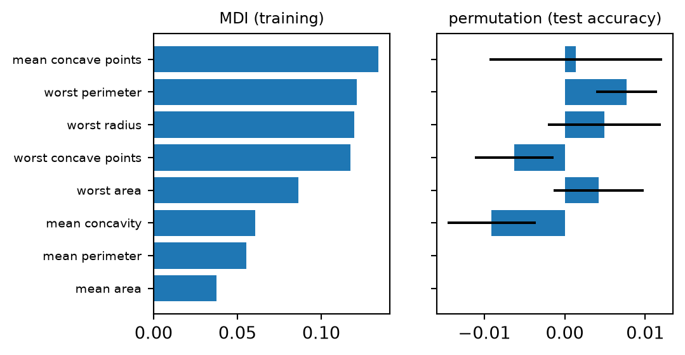
Averaged over 200 trees, MDI is much more stable than in a single tree, and it spreads the importance over many features: the random choice of features at each split gives every informative feature its turn. The size features (radius, perimeter, area) share the importance among themselves. For the same reason, their permutation importances are all small, within the noise (on 143 test samples, one sample is 0.007 of accuracy): shuffle one, and the forest uses its near-copies instead. Small permutation importance means “not needed given the others”, not “irrelevant”.
Forests for regression
Diabetes, with the folds of 5a and 6a:
cv5 = KFold(5, shuffle=True, random_state=0) # regression: 5 shuffled folds
for name, m in [("linear regression ", LinearRegression()),
("tree (max_depth = 2, 6a) ", DecisionTreeRegressor(max_depth=2, random_state=0)),
("random forest (default) ", RandomForestRegressor(300, random_state=0)),
("random forest (d/3, leaf 5)", RandomForestRegressor(300, max_features=1 / 3,
min_samples_leaf=5, random_state=0))]:
print(f"{name}: CV R2 {cross_val_score(m, Xd_train, yd_train, cv=cv5, scoring='r2').mean():.3f}")linear regression : CV R2 0.522
tree (max_depth = 2, 6a) : CV R2 0.397
random forest (default) : CV R2 0.467
random forest (d/3, leaf 5): CV R2 0.498The forest is far better than one tree, and still below the linear model: averaging smooths the staircases, but cannot invent the smooth, additive trend that a line captures with three weights. A forest is a strong default, not a guarantee; the linear baseline of CW1 remains the reference to beat.
Boosting
Bagging and forests average low-bias, high-variance models built in parallel, independently of each other. Boosting does the opposite: it adds high-bias models (shallow trees, even stumps: trees with a single split) in sequence, each one trained to correct the errors of those before it.
- the question (Kearns and Valiant, 1988): can weak learners, just better than chance, be combined into a strong one?
- yes: Schapire (1990) proved it, and Freund and Schapire (1997) made it practical with AdaBoost
- Friedman (2001) recast boosting as gradient descent on a loss: gradient boosting, the basis of the modern libraries
Each stump has high bias (one question cannot describe much), so boosting attacks bias: the sum of many simple models can represent a complex function. The price: the models are no longer independent, the sequence cannot be parallelised, and adding models can overfit.
AdaBoost
Two classes coded \(y_i \in \{-1, +1\}\); each sample has a weight \(v_i\), initially \(v_i = 1/n\). For \(m = 1, \dots, M\):
- fit a weak learner \(\hat f_m(\mathbf{x}) \in \{-1, +1\}\) on the training data weighted by \(v_i\)
- compute its weighted error \(\;e_m = \sum_{i:\ \hat f_m(\mathbf{x}_i) \neq y_i} v_i\)
- give it a vote \(\;\alpha_m = \frac{1}{2}\ln\frac{1 - e_m}{e_m}\): large when \(e_m\) is small, zero at \(e_m = 0.5\) (chance)
- update the weights, \(\;v_i \leftarrow v_i\, e^{-\alpha_m y_i \hat f_m(\mathbf{x}_i)}\), and normalise them to sum 1: misclassified samples (\(y_i\hat f_m(\mathbf{x}_i) = -1\)) gain weight, correct ones lose it
The final classifier is the weighted vote \(\;\hat y = \mathrm{sign}\big(F_M(\mathbf{x})\big)\), with \(F_M(\mathbf{x}) = \sum_{m=1}^{M}\alpha_m \hat f_m(\mathbf{x})\).
The weights make each new learner concentrate on the samples that the ensemble still gets wrong: the hard ones, near the boundary.
Note
scikit-learn’s AdaBoostClassifier implements SAMME (Zhu et al., 2009), the multiclass version: \(\alpha_m = \eta\big[\ln\frac{1-e_m}{e_m} + \ln(c - 1)\big]\), for \(c = 2\) the same votes up to a factor 2, with a learning rate \(\eta\).
AdaBoost at work
Ten rounds by hand, with stumps, on two interleaved half-moons:
Xm, ym = make_moons(200, noise=0.25, random_state=0)
ys = 2 * ym - 1 # labels -1 / +1
v = np.full(len(ys), 1 / len(ys)) # sample weights
F, snap = np.zeros(len(ys)), {}
for m in range(1, 11):
stump = DecisionTreeClassifier(max_depth=1).fit(Xm, ys, sample_weight=v)
h = stump.predict(Xm)
e = v[h != ys].sum() # weighted error
alpha = 0.5 * np.log((1 - e) / e) # vote of this stump
v = v * np.exp(-alpha * ys * h); v /= v.sum() # reweight
F += alpha * h
snap[m] = (stump, v.copy(), np.mean(np.sign(F) == ys))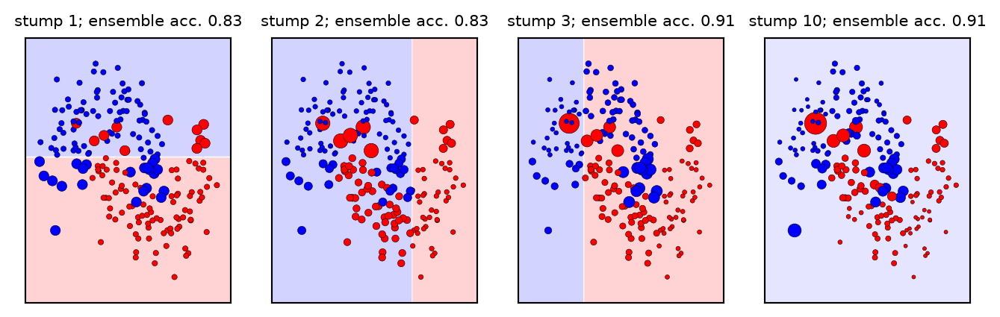
Each panel shows the \(m\)-th stump (one cut) and the weights after it, as marker sizes. After a few rounds, the large markers are the samples where the two moons meet: the ensemble’s attention moves to the boundary. Ten stumps, each a single straight cut, combine into a training accuracy of about 0.90, the same as scikit-learn’s AdaBoostClassifier with ten stumps.
Boosting reduces bias
AdaBoost with stumps on the Hastie data, monitoring a validation set as stumps are added (staged_score):
Xa, Xv, ya, yv = train_test_split(Xh_train, yh_train, test_size=0.25, stratify=yh_train, random_state=0)
ada = AdaBoostClassifier(DecisionTreeClassifier(max_depth=1), n_estimators=800,
random_state=0).fit(Xa, ya)
val = list(ada.staged_score(Xv, yv)) # accuracy after 1, 2, ..., 800 stumps
tr = list(ada.staged_score(Xa, ya))
fig, ax = plt.subplots(figsize=(4.5, 3))
ax.plot(range(1, 801), tr, label="training")
ax.plot(range(1, 801), val, label="validation")
ax.set_xscale("log")
ax.set_xlabel("number of stumps $M$")
ax.set_ylabel("accuracy")
_ = ax.legend(fontsize=8)
print(f"validation accuracy: 1 stump {val[0]:.3f}, 10 stumps {val[9]:.3f}, "
f"100 stumps {val[99]:.3f}, 800 stumps {val[-1]:.3f}")validation accuracy: 1 stump 0.547, 10 stumps 0.637, 100 stumps 0.800, 800 stumps 0.912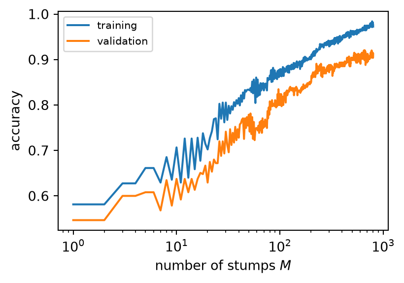
One stump is barely better than chance; hundreds of them reach about 0.9. No single stump can describe the boundary (a sphere in 10 dimensions, as we will see), but their weighted sum can: this is bias reduction. The training accuracy keeps rising faster than the validation accuracy: with enough rounds boosting overfits, so \(M\) is a hyperparameter, unlike in bagging.
Gradient boosting: descent in the space of models
Gradient descent (2b) moves the weights of one model downhill on the loss. Gradient boosting (Friedman, 2001) moves the model itself:
- a model is described by its predictions on the \(n\) training samples, \(\big(F(\mathbf{x}_1), \dots, F(\mathbf{x}_n)\big)\): a point in a space with one axis per sample
- the loss is a landscape in that space, lowest at the data \(\mathbf{y}\)
- the steepest way down is minus the gradient of the loss: for the squared error, the residuals \(y_i - F(\mathbf{x}_i)\)
- we cannot step along the residuals themselves (that would just copy the training data); we step along the tree that best fits them. Trees are the directions we are allowed to move in
- a step: \(F_m = F_{m-1} + \eta\,\hat f_m\), with \(\eta\) the learning rate of 2b
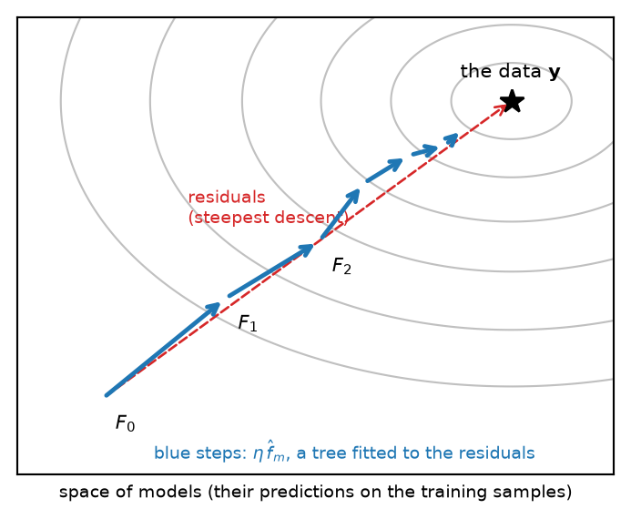
Each tree is small (a few leaves) and only approximately parallel to the residuals, and each step is shortened by \(\eta\): the path zig-zags towards the data. Stopping early keeps the model away from \(\mathbf{y}\) itself, i.e. from fitting the noise (5a).
Gradient boosting: the algorithm
For a loss \(L(y, F)\):
- start from the best constant, \(F_0 = \arg\min_c \sum_i L(y_i, c)\): the mean, for the squared error
- for \(m = 1, \dots, M\):
- compute the pseudo-residuals, the negative gradient of the loss at the current model: \(\;r_{im} = -\left.\dfrac{\partial L(y_i, F)}{\partial F}\right|_{F = F_{m-1}(\mathbf{x}_i)}\)
- fit a small regression tree \(\hat f_m\) to the pairs \((\mathbf{x}_i, r_{im})\)
- update: \(F_m(\mathbf{x}) = F_{m-1}(\mathbf{x}) + \eta\,\hat f_m(\mathbf{x})\)
- the model is the sum \(F_M = F_0 + \eta\sum_{m=1}^{M}\hat f_m\)
For the squared error \(L = \frac{1}{2}(y - F)^2\) the pseudo-residuals are the ordinary residuals, \(r_{im} = y_i - F_{m-1}(\mathbf{x}_i)\): each tree learns what the current model still gets wrong. (The leaf values of each tree are then adjusted to minimise the loss directly, a line search per leaf.) Any loss with a gradient can be boosted, by the same algorithm: that is what makes gradient boosting general.
Trees trained on the residuals
Diabetes, bmi only, trees of depth 2, \(\eta = 0.1\), by hand:
eta = 0.1
F = np.full(len(yd_train), yd_train.mean()) # F_0: the mean
xo = np.sort(bmi, axis=0) # a grid, for plotting
Fo = np.full(len(xo), yd_train.mean())
stages = {}
for m in range(1, 101):
r = yd_train - F # residuals = pseudo-residuals (squared error)
fm = DecisionTreeRegressor(max_depth=2).fit(bmi, r)
if m in (1, 10, 100):
stages[m] = [Fo.copy(), r.copy(), fm.predict(xo)]
F += eta * fm.predict(bmi)
Fo += eta * fm.predict(xo)
if m in (1, 10, 100):
stages[m].append(Fo.copy())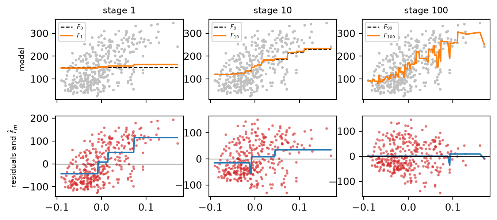
Bottom row: the residuals of the current model (red) and the small tree fitted to them (blue); top row: the model before and after adding a tenth of that tree. At stage 1 the residuals show the whole trend; by stage 100 they are almost structureless, and the trees fitted to them start to chase individual patients. A hundred trees of four leaves build a function that no single tree of that size could represent.
Losses and pseudo-residuals
| Loss \(L(y, F)\) | Pseudo-residual \(r\) | Use | scikit-learn loss= |
|---|---|---|---|
| squared error \(\frac{1}{2}(y - F)^2\) | \(y - F\) | regression | "squared_error" (default) |
| absolute error \(\lvert y - F\rvert\) | \(\mathrm{sign}(y - F)\) | regression, outliers | "absolute_error" |
| Huber (2b) | \(y - F\) if small, else \(\pm\delta\) | regression, outliers | "huber" |
| log-loss (3a), \(F\) = log-odds | \(y - \hat p\), with \(\hat p = \sigma(F)\) | classification | "log_loss" (default) |
| exponential \(e^{-yF}\) | \(y\,e^{-yF}\) | classification: AdaBoost | "exponential" |
For classification, \(F\) is a score on the log-odds scale, as \(z\) in logistic regression (3a), and the probability is \(\sigma(F)\); the pseudo-residual \(y - \hat p\) is the gradient we met in 3a. The last line is a classical result (Friedman, Hastie and Tibshirani, 2000): AdaBoost is gradient boosting with the exponential loss, which explains why it works, and why it is sensitive to mislabelled samples (the exponential grows fast for confident errors).
Learning rate and number of stages
staged_predict gives the prediction after each stage. Diabetes, all features, trees of depth 3, a validation split of the training set:
Xa, Xv, ya, yv = train_test_split(Xd_train, yd_train, test_size=0.25, random_state=0)
fig, ax = plt.subplots(figsize=(4.5, 3))
for eta in [1.0, 0.1, 0.02]:
gb = GradientBoostingRegressor(learning_rate=eta, n_estimators=500, max_depth=3,
random_state=0).fit(Xa, ya)
val = [mean_squared_error(yv, p) for p in gb.staged_predict(Xv)]
ax.plot(range(1, 501), val, label=fr"$\eta$ = {eta}: best at {np.argmin(val) + 1}")
ax.set_xscale("log")
ax.set_xlabel("number of stages $M$")
ax.set_ylabel("validation MSE")
_ = ax.legend(fontsize=8)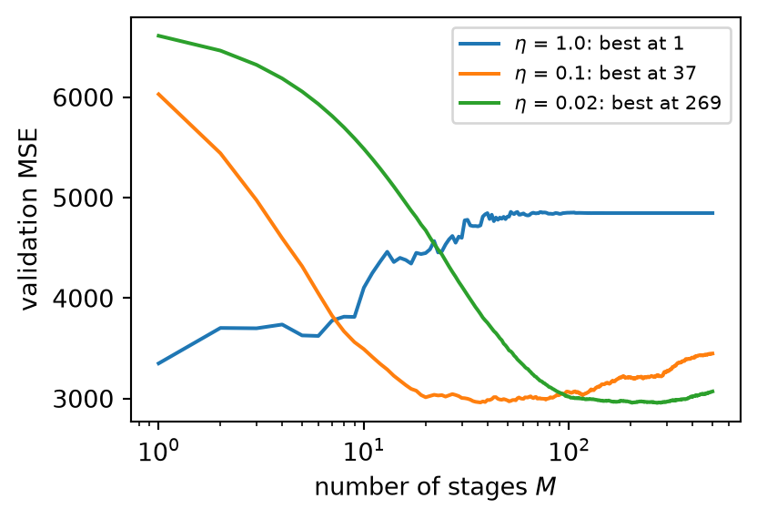
With \(\eta = 1\) the first tree already does all the useful work, and every further stage makes the validation error worse: each tree corrects too much, and the model chases noise. Smaller steps reach a minimum at least as low, much later, and stay near it longer: shrinkage trades computation for generalisation, as a small learning rate in gradient descent. The best \(M\) depends on \(\eta\): choose them together, or fix a small \(\eta\) and stop early (5a) with n_iter_no_change and validation_fraction.
Regularising boosting
Boosting reduces bias stage after stage, so it must be held back explicitly:
| Hyperparameter | Effect | Typical values |
|---|---|---|
learning_rate (\(\eta\)) |
shrinks each correction | 0.01–0.3 (smaller: more stages, better generalisation) |
n_estimators (\(M\)), early stopping |
number of stages | chosen by validation: n_iter_no_change, validation_fraction |
max_depth / max_leaf_nodes |
size of each tree, i.e. order of the interactions | depth 2–6, 8–64 leaves (stumps: no interactions at all) |
min_samples_leaf |
smallest leaf | larger for noisy targets |
subsample |
each stage on a random fraction of the samples (stochastic gradient boosting) | 0.5–0.8: faster, adds diversity |
l2_regularization |
L2 penalty on the leaf values (5a), in HistGradientBoosting* |
0–10 |
The depth of the trees sets which interactions the model can learn: stumps give an additive model (a sum of functions of one feature each), depth 2 allows pairs of features, and so on. Many hyperparameters interact, which is why boosting is usually tuned with a randomised search (RandomizedSearchCV, 4b), giving every candidate model a comparable budget.
Histogram gradient boosting
GradientBoostingClassifier tries every threshold of every feature at every node, as CART (6a). HistGradientBoostingClassifier and HistGradientBoostingRegressor (inspired by LightGBM) first bin each feature by its quantiles, and try only the bin edges:
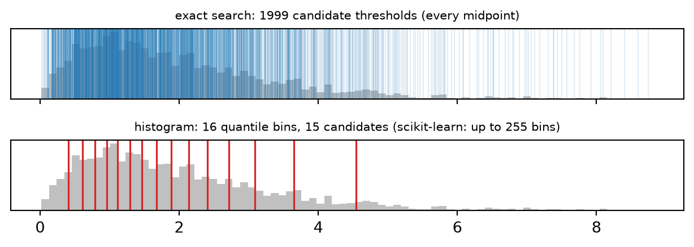
- speed: the number of candidates no longer grows with \(n\); training is often orders of magnitude faster for tens of thousands of samples, at almost no cost in accuracy (255 thresholds per feature are plenty)
- missing values and categorical features handled natively (
categorical_features): no imputation or one-hot encoding (3b) - early stopping on by default when \(n > 10\,000\);
l2_regularization,max_leaf_nodes(default 31),min_samples_leaf(default 20)
For CW2, the natural choice of a boosting model.
Beyond scikit-learn
Three libraries dominate gradient boosting in practice, all with a scikit-learn-compatible interface:
- XGBoost (Chen and Guestrin, 2016): second-order (Newton) steps, an explicit penalty on the number of leaves and their values, very efficient parallel and GPU training
- LightGBM (Ke et al., 2017): histograms and leaf-wise growth, very fast on large data
- CatBoost (Prokhorenkova et al., 2018): careful handling of categorical features and ordered boosting, which limits a subtle target leakage
On medium-sized tabular data (rows of measurements, as in CW1–CW2), tree ensembles still outperform deep neural networks in most benchmarks (Grinsztajn, Oyallon and Varoquaux, NeurIPS 2022): neural networks struggle with irregular functions, uninformative features and features of different natures, which trees handle easily.
Keep this in mind for CW3: comparing a neural network with your CW1 model is fair, and a tree ensemble is the comparison a reviewer would ask for. The libraries are not needed for CW2: scikit-learn’s histogram boosting implements the same ideas.
Comparing ensembles
A benchmark from The Elements of Statistical Learning (section 10.1), built into scikit-learn as make_hastie_10_2: points scattered around the origin, class 1 if they lie outside a ball, class 0 inside. In two dimensions, a disc (below); in the benchmark, a ball in ten dimensions (\(\sum_{j=1}^{10} x_j^2 > 9.34\), with balanced classes).
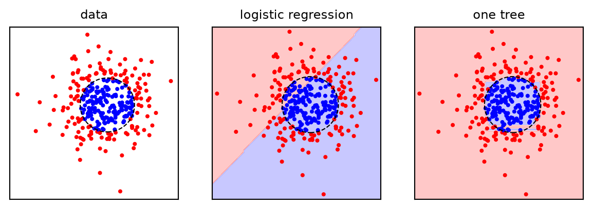
No straight line separates the inside of a circle from the outside: logistic regression is at chance. A tree approximates the circle with boxes, which works well in two dimensions. In ten, where every boundary point involves all ten features at once, the boxes needed to approximate the ball multiply.
When do ensembles help?
The same problem with more and more features (1500 samples, five-fold CV):
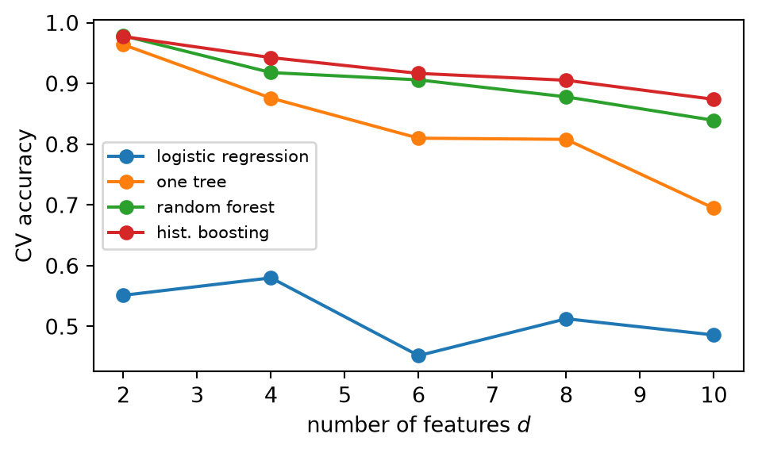
Tip
Take-home. With two features, one tree is almost as good as any ensemble. As the boundary comes to depend on more features jointly, the single tree degrades fast (to about 0.70 at \(d = 10\)), while the forest (0.84) and boosting (0.88) hold up: many trees together can build what one tree cannot. A linear model stays at chance whatever \(d\): the problem is not linear.
Ensembles on two kinds of data
All the methods of today, with default settings, on the same five folds: the Hastie data (\(d = 10\), a non-linear boundary) and breast cancer (close to linear, 3a–5a):
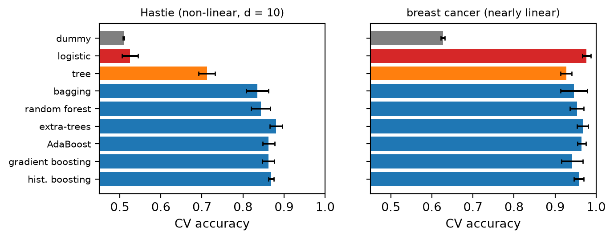
Tip
Take-home. Ensembles (blue) are a large gain when the structure is non-linear and involves many features together (Hastie: about 0.83–0.88 against 0.71 for one tree and chance for logistic regression). When the structure is close to linear (breast cancer), the regularised linear model (red) is the best, and the ensembles only come close to it. Ensembles are a strong default, not a guarantee: in CW2, always compare them with the linear baseline of CW1, on the same folds.
Bias, variance and ensembles
| Bagging, random forests, extra-trees | Boosting (AdaBoost, gradient, histogram) | |
|---|---|---|
| base models | deep trees: low bias, high variance | shallow trees: high bias, low variance |
| built | in parallel, independently | in sequence, each corrects the previous ones |
| reduces mainly | variance (averaging, the 5a formula) | bias (an additive model of many small pieces) |
| diversity from | bootstrap samples, random features, random thresholds | reweighted samples or residuals |
| more models | never hurts, plateaus | eventually overfits: \(M\) is tuned, with \(\eta\) |
| main hyperparameters | max_features, leaf size |
learning_rate, n_estimators, tree size |
| sensitive to | little: good defaults | label noise (AdaBoost), tuning |
Both families also reduce the other component a little, and both inherit the limits of trees: axis-aligned pieces, no extrapolation (6a). Stacking and voting sit apart: they combine whatever models you give them.
Summary: ensembles as (H, L, A)
| Element | Bagging / random forest | AdaBoost | Gradient boosting |
|---|---|---|---|
| Model \(H\) | average of \(M\) deep trees, \(\frac{1}{M}\sum_m \hat f_m\) | weighted vote of \(M\) stumps, \(\mathrm{sign}\sum_m \alpha_m \hat f_m\) | sum of \(M\) small trees, \(F_0 + \eta\sum_m \hat f_m\) |
| Strategy \(L\) | each tree: impurity (6a) on its bootstrap sample | exponential loss (equivalently) | any differentiable loss: squared, Huber, log-loss |
| Algorithm \(A\) | independent trees: bootstrap + random features | sequential reweighting of the samples | sequential fits to the pseudo-residuals (gradient descent in function space) |
| Hyperparameters | n_estimators, max_features, leaf size |
n_estimators, learning_rate |
learning_rate, n_estimators, tree size, subsample, l2_regularization |
| scikit-learn | BaggingClassifier, RandomForestClassifier, ExtraTreesClassifier |
AdaBoostClassifier |
GradientBoostingClassifier, HistGradientBoostingClassifier |
All have Regressor versions; VotingClassifier and StackingClassifier combine models of any kind.
What to look for
When you use an ensemble, check:
- that it is compared with a simple baseline (dummy, linear model, one tree) on the same folds, with the spread of the scores
- for forests: that
n_estimatorsis large enough (the OOB or CV curve is flat), and thatmax_featureshas been tried at a few values (regression: set it explicitly) - for boosting: that
learning_rateand the number of stages are chosen together (early stopping or validation), and that the training–validation gap is under control - the tuning budget: similar for all candidates, with the test set used once
- the importances: permutation on held-out data, with caution for correlated features
- the cost: training time, prediction time, interpretability, and whether a simpler model is almost as good
- for stacking: that the meta-learner is trained on out-of-fold predictions and the whole stack is evaluated inside the CV loop
Suggested readings and activities
Suggested readings:
- The Elements of Statistical Learning: bagging (section 8.7), boosting (chapter 10, with the Hastie example of section 10.1) and random forests (chapter 15); the chapter on ensemble learning in Machine Learning with Python.
- The scikit-learn user guide on ensembles, and on partial dependence plots to show the shape of an effect in any model; Grinsztajn et al., Why do tree-based models still outperform deep learning on tabular data?
Suggested activities:
- Count the root features of a forest with
max_featuresfrom 1 to 30: how does their variety change, and the CV accuracy with it? - Run AdaBoost by hand on XOR (5a, 6a): how many stumps are needed?
- Compare
GradientBoostingRegressorwithloss="squared_error"andloss="huber"on diabetes after adding a few large outliers to the training targets. - Stack a random forest and a histogram boosting model on the Hastie data: does the stack beat both?
Coursework: CW2
For CW2 (2–3 scikit-learn tools on your CW1 dataset, critical comparison, best pipeline: deadlines and the brief on Moodle), today’s concepts the coursework expects you to use and discuss:
- tree ensembles (
RandomForestClassifier/Regressor,HistGradientBoostingClassifier/Regressor, and others) as candidate tools, compared with the CW1 model and a baseline on the same folds - their main hyperparameters (
max_features;learning_ratewith the number of stages or early stopping) chosen by cross-validation, with a comparable tuning budget for every candidate - bias and variance as the language to explain why bagging, forests or boosting help (or not) on your data
- interpretation with permutation importance on held-out data; voting or stacking only if evaluated inside the CV loop
Tip
Next week: kNN and support vector machines (7a), the last supervised methods before CW2, and clustering (7b).

ENG4200 AI4